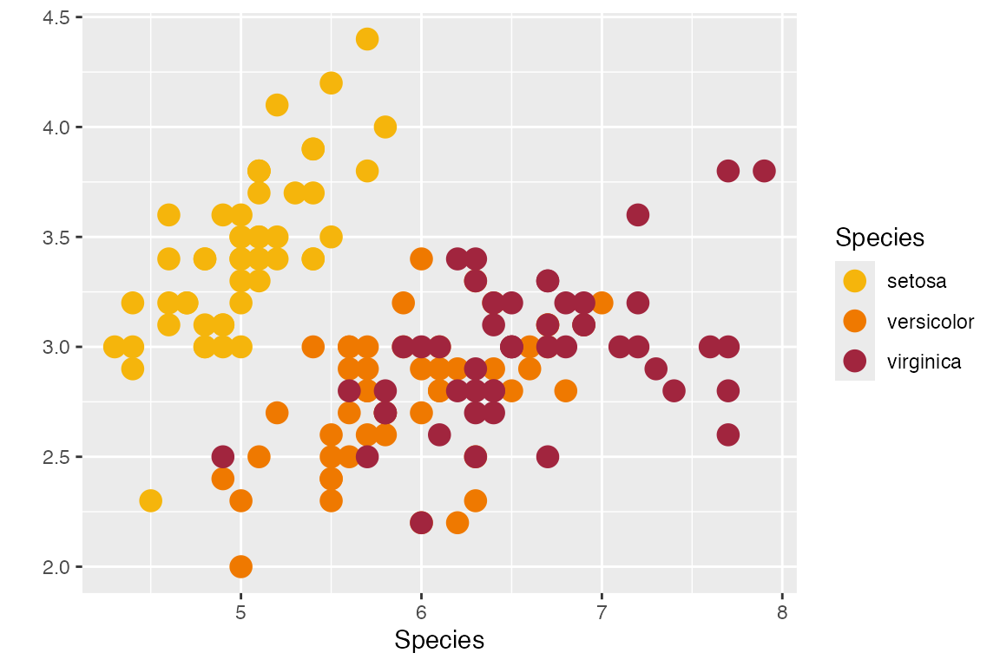
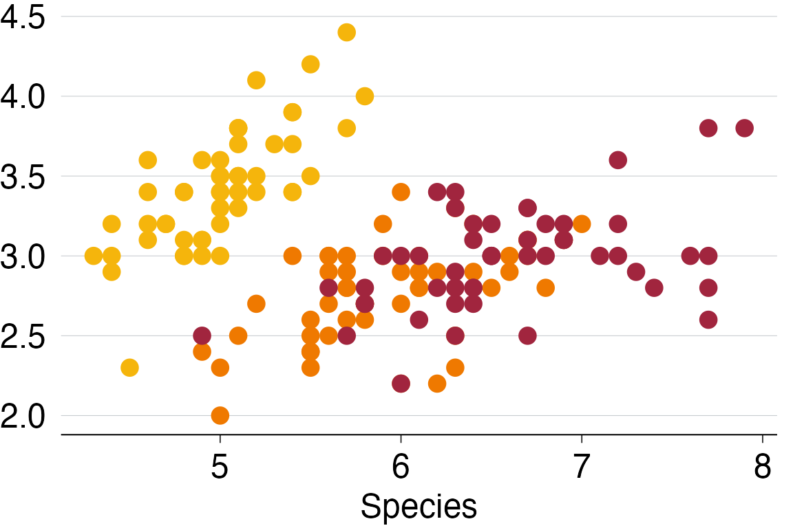
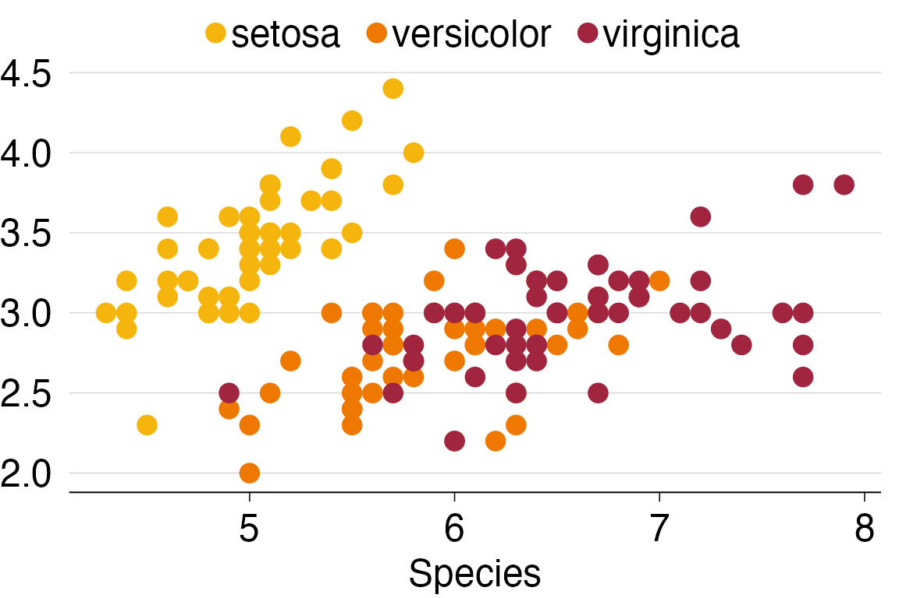
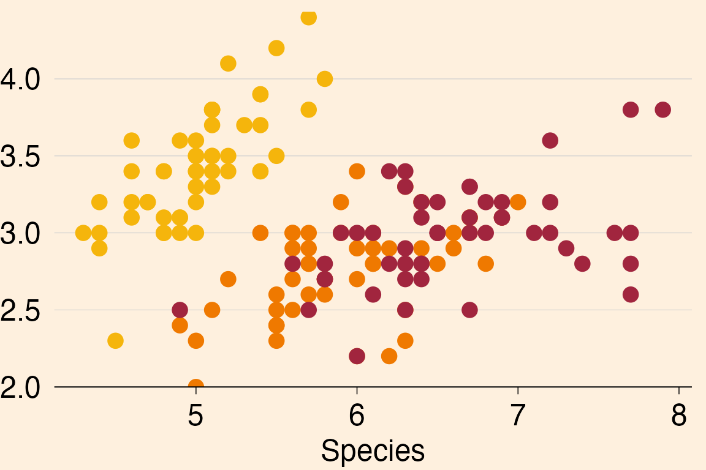
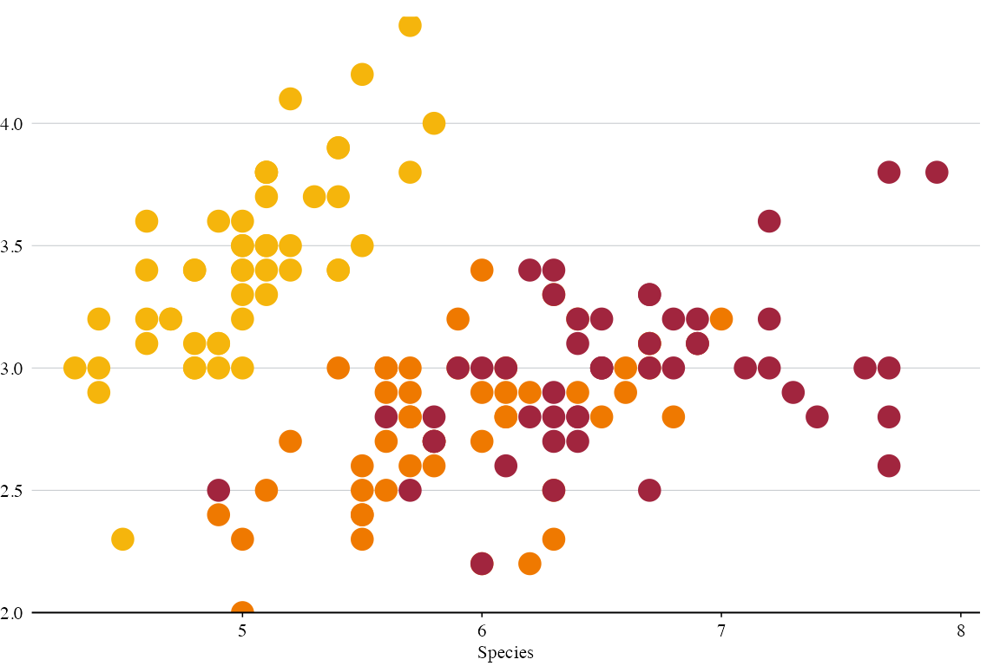
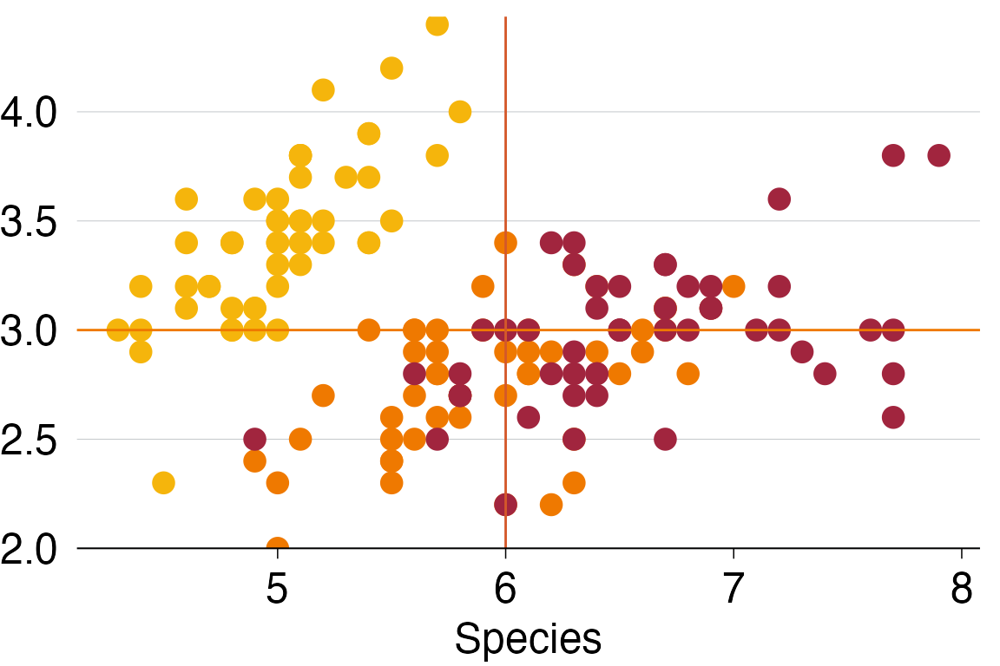
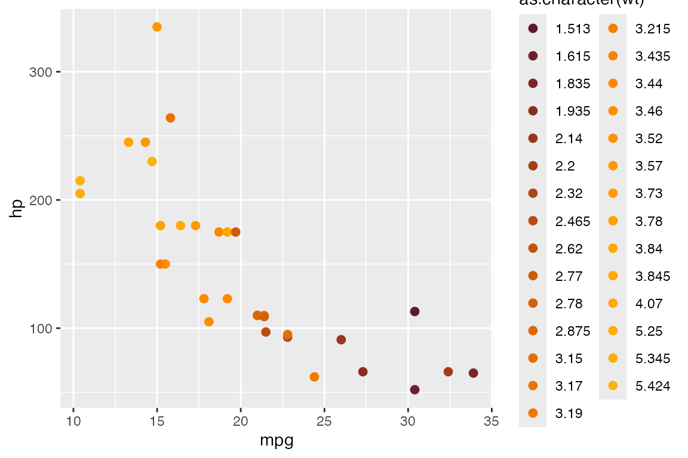
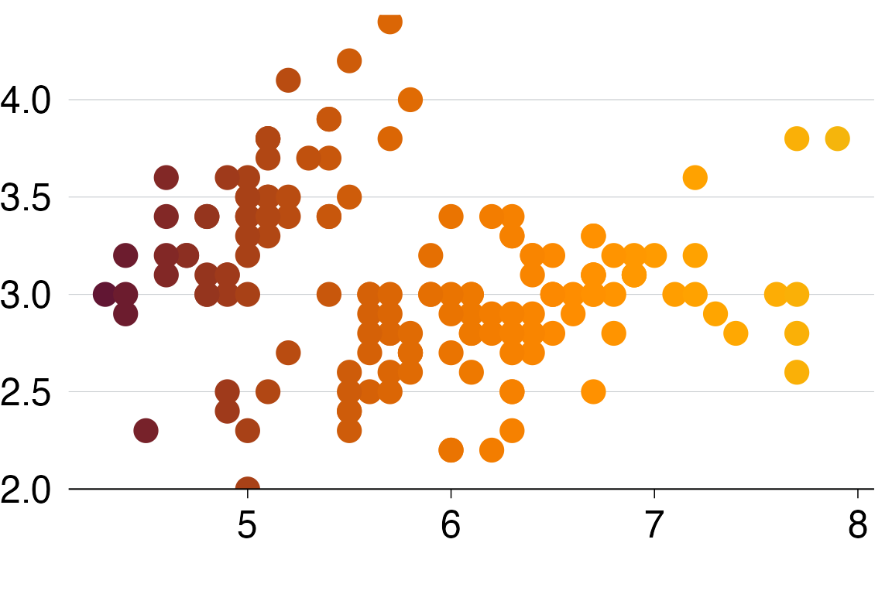

Using grattantheme
using_grattantheme.Rmd##
## --------------
## You are excellent!
## --------------
## \
## \
## \
## _____
## .'` ,-. `'.
## / ([ ]) \
## /.-""`(`)`""-.\
## <'```(.)```'>
## <'```(.)```'>
## <'``(.)``'>
## sk <``\_/``>
## `'---'`
## This vignette explains how to use grattantheme to quickly and consistently apply Grattan chart formatting to charts made in R using ggplot.
When creating a chart using ggplot we have to:
- Choose a dataset;
- Map variables to chart aesthetics
aes(); - Choose a
geom_.
For example, using the in-built iris dataset:
plot <- ggplot(iris,
aes(x = Sepal.Length,
y = Sepal.Width,
colour = Species)) +
geom_point(size = 4) +
labs(x = "Species",
y = "",
colour = "Species")This successfully plots the data we want to plot:

But it doesn’t yet look like a Grattan chart. To adjust the look we adjust ‘theme’ elements, like axis.ticks.x = element_line(colour = "black") to adjust the axis tickmarks on the x axis; panel.grid.major.x = element_blank() to turn off vertical gridlines; and so on; and on; and on. We also need to adjust aesthetic colours to the Grattan palette; setting, for example, fill = "#F68B33". The grattantheme package contains tools and shortcuts to simplify this process.
Formatting theme elements with theme_grattan()
The function theme_grattan() contains all of the Grattan theme adjustments in one handy command. Combined with grattan_colour_manual, which easily changes colours of aesthetics, your R chart will be ready for a report or a slide in no time.
plot +
theme_grattan()
By default, theme_grattan() supresses the legend to allow for clearer on-chart labelling. We can include the legend with the legend argument, which takes "off", "top", "bottom", "left" or "right":
plot +
theme_grattan(legend = "top")
To align the y-axis with zero, change the y scale with grattan_y_continuous():
plot +
theme_grattan() +
grattan_y_continuous()Sometimes we’ll want a chart for a box in a report. We can change the background colour with the background argument:
plot +
theme_grattan(background = "box") +
grattan_y_continuous()
The standard Grattan rules for x and y axes flip if the chart is a horizontal bar chart. The x axis then follows the rules of the y axis, and vice-versa. If we are using a ‘flipped’ chart (imlemented with coord_flipped()), we can tell theme_grattan this is the case using the argument fillped set to TRUE.
plot +
coord_flip() +
theme_grattan(flipped = TRUE) +
grattan_y_continuous()
The final adjustments we can specify with theme_grattan are the font size and font family. The defaults meet Grattan formatting requirements, but if we do need to change them we can:
plot +
theme_grattan(base_size = 8, base_family = "serif") +
grattan_y_continuous()
Using Grattan colours
Grattan’s colours are loaded with grattantheme. The HEX codes for individual Grattan colours can be called using grattan_[colourname], eg grattan_lightorange. Colours names are taken from the chart-guide and are:
We can call single colours:
plot +
geom_hline(yintercept = 3, colour = grattan_orange) +
geom_vline(xintercept = 6, colour = grattan_darkorange) +
theme_grattan() +
grattan_y_continuous()
We can also use the scale_fill_grattan() or scale_colour_grattan() functions to change the colours of our fill or colour aesthetics. These can be used for discrete/catagorical data (the default) or continuous data.
Discrete colours
In our example, we have three different flowers each represented by a colour. So we need to set discrete = TRUE
plot +
theme_grattan() +
grattan_y_continuous() +
scale_colour_grattan(discrete = TRUE)
Note that if you need more than 10 colours your chart will not render some of the data. You can set a manual theme using make_grattan_pal
ggplot(mtcars, aes(x = mpg, y = hp, colour = as.character(wt))) +
geom_point() +
scale_colour_manual(values = make_grattan_pal()(29))
Continuous colours
scale_(colour|fill)_grattan includes an option for continuous colours: discrete = FALSE.
plot2 <- ggplot(iris,
aes(x = Sepal.Length,
y = Sepal.Width,
colour = Sepal.Length)) +
geom_point(size = 5) +
scale_y_continuous_grattan() +
labs(x = "")
plot_f <- plot2 +
theme_grattan() +
scale_colour_grattan(discrete = FALSE)
plot_f
Saving plots with grattan_save
The grattan_save() function saves your chart in a variety of types. We specify the type with the type argument that can take the arguments:
-
"normal": a standard report chart size, and the default. [height = 14.5cm x width = 22.16cm] -
"wholecolumn: a taller whole-column chart for reports. [22.16 x 22.16] -
"fullpage": a full-page chart for reports. [22.16 x 44.32] -
"tiny": a rarely-used short chart for reports. [11.08 x 22.16] -
"fullslide": to produce charts that look like a full slide with the Grattan logo. This option allows notes and sources to accompany the saved figure. -
"fullslide_169": as with “fullslide”, but in 16:9 orientation. -
"blog": Like “fullslide” plots, but with narrower borders – use this type for the Grattan Blog or other online outlets like The Conversation.
You can specify type = "all" to save in all formats.
The argument filename is required. You must include an extension; .pdf is standard for Grattan charts for reports; .png is standard for the Grattan Blog.
grattan_save() uses the ggplot2 function ggsave() to save your chart. Like ggsave(), grattan_save() will use the last plot you displayed by default, but you can specify something else with object.
Now we can save our Grattan-formatted graph as a normally-formatted report chart:
# Create and store the plot:
plot_final <- plot_f +
labs(title = "Iris plants are rad!",
subtitle = "Width of sepal",
x = "Length of sepal",
y = "",
caption = "Notes: A classic dataset. Source: Fisher (1936)")
# Save the plot
grattan_save(filename = "iris.pdf",
object = plot_final,
type = "normal")Which produces a chart that can fit into a report. Note that the title, subtitle and notes/sources have been removed.
If we wanted to save a full-slide chart, complete with a title, subtitle, notes/sources and the Grattan slide format, we specify type = "fullslide":
# Save the plot
grattan_save(filename = "iris_fullslide.pdf",
object = plot_final,
type = "fullslide")Saving Powerpoint files
It’s convenient to also save your files in Powerpoint format. This allows PDs to easily use your graphs in their presentations. Saving in this format also means you can include speaker notes – such as information about the script used to create the file – which can help us to keep track of things.
You can save a Powerpoint file, with appropriate speaker notes included, like this:
grattan_save_pptx(plot_final,
"iris_fullslide.pptx",
type = "fullslide")Or, you can just use the save_pptx argument to grattan_save(), like this:
grattan_save("iris_fullslide.pdf",
plot_final,
type = "fullslide",
save_pptx = TRUE)Saving chart data
When we release reports or working papers, we typically upload an Excel file including ‘chart data’ for most of our charts. The process for making and properly formatting these files can be a bit laborious. grattantheme helps streamline that process, using the save_chartdata() function.
You can use it like this:
save_chartdata("plot_final.xlsx", object = plot_final)Or, just use the save_data argument to grattan_save() when you save your plot:
grattan_save("plot_final.png",
type = "fullslide",
save_data = TRUE)